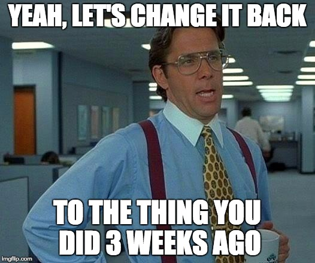
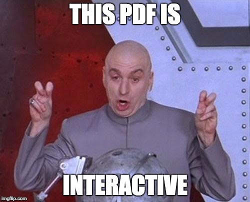

Create an R interface that is easyfor the user and just "works"
Plotly is awesome - R package easiest implementation of quick, great interactive graphics - but still bound to plotly.js and its implementations
Create an R interface that is easyfor the user and just "works"
Plotly is awesome - R package easiest implementation of quick, great interactive graphics - but still bound to plotly.js and its implementations

ggplotly makes ggplot2 > base
ggplotly)
To start: